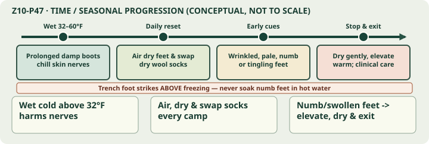

Z10-P47 · Wilderness medicine · New manuscript
Prevent and recognize non-freezing cold injury (trench foot)
Catch prolonged wet-cold foot injury occurring well above freezing before nerve and skin damage disables walking.
When it applies · Multi-day travel or standing in cold rain, slush, wetlands, or damp boots at temperatures between roughly 32°F and 60°F.
Equipment · Multiple pairs of dry wool/synthetic socks, breathable camp footwear, dry towel, and sheltered warm sleeping setup.

Actions
- Recognize that immersion/trench foot develops from prolonged wet cold WITHOUT freezing—feet turn cold, pale, wrinkled, numb, or tingling, then swell, throb, redden, and blister painfully upon warming.[X13, E10, M21]
- Prevent injury by changing into dry socks at least daily, airing and drying feet completely at camp, warming boots/insoles away from direct flame, and never sleeping in damp footwear.[E10, X13]
- If trench foot signs appear, remove wet boots/socks immediately, dry feet gently without rubbing or soaking in hot water, keep feet clean, warm, dry, and elevated in shelter, and arrange non-weight-bearing evacuation for clinical care.[X13, M21, M24]
Failure recognition · Wearing waterlogged boots for three straight cold autumn days without airing or changing socks until feet swell too large to fit back inside footwear.[X13, E10]
Verify · Confirm daily dry-foot inspection, spare dry socks packed waterproof, and absence of numbness, mottling, or painful swelling.[E10, X13]
Stop or change course · Persistent numbness, swelling, purple/pale mottling, or painful blistering halts hiking and requires medical evaluation.[X13, M21]
Evidence and editorial notes
- E10 · NWS · What To Do If You're Caught in a Winter Storm (current web edition)
- Section: Outside > Protect yourself from frostbite and hypothermia · Conditions: Outdoor winter storm
Support: Keep clothing dry and avoid overexertion. Wetness accelerates cooling.
Limitations: Cotton retains moisture and accelerates conductive and evaporative heat loss. · Conflicting evidence: None; reinforces moisture-management layering.
Editorial note: Links sweat management to overnight insulation integrity. · Specialist reviewer: Cold-weather shelter and wilderness medicine
Primary source · checked 2026-11-24 - M21 · NIH / MedlinePlus · Wounds and Injuries (current web edition)
- Section: Blisters, Foot Care, and Skin Integrity in Field Travel · Conditions: Friction hot spots and intact vs torn skin blisters during multi-day travel
Support: Address friction hot spots early by stopping to adjust socks/footwear and protecting skin with clean padding; keep intact blisters clean and unpopped when practical and watch torn skin closely for infection.
Limitations: Patients with diabetes or poor circulation face severe foot-infection risk and require early clinical review. · Conflicting evidence: None; emphasizes prevention over invasive blister lancing.
Editorial note: Grounds backcountry foot hygiene and infection prevention. · Specialist reviewer: Wilderness medicine and podiatry
Primary source · checked 2026-11-24 - M24 · Wilderness Medical Society · Frostbite clinical practice guideline 2024 update (2024)
- Section: Field treatment, avoid refreezing; rapid water-bath rewarming · Conditions: Suspected frozen tissue without safe definitive care
Support: Protect from refreezing and mechanical injury. Any active rewarming requires the guideline’s conditions and a safe no-refreezing plan.
Limitations: Temperature, duration and transfer are clinical decisions; avoid converting the guideline into a universal field recipe. · Conflicting evidence: See A02 claim audit for boundaries.
Editorial note: Core clinical frostbite decision boundary in Z10. · Specialist reviewer: Wilderness medicine and frostbite specialist
Primary source · checked 2026-11-24 - X13 · NPS · Wetlands Subject Guide (current web edition)
- Section: Wetlands > Footing, Immersion, Insects and Water Quality · Conditions: Travel near marshes, swamps, fens and slow-water estuaries
Support: Wetlands combine wet-cold immersion risk, concealed snags, unstable muck that drains energy rapidly, insect-borne disease exposure and high-organic/stagnant water requiring strict treatment or alternate sourcing.
Limitations: Footwear immersion and trench-foot/cold injury occur even in mild temperatures during prolonged wetland exposure. · Conflicting evidence: None; complements EPA-WETLAND and W16.
Editorial note: Grounds wetland navigation, foot-care and cold-wet exposure cards. · Specialist reviewer: Wilderness safety and wetland operations
Primary source · checked 2026-11-24
Source lineage · CDC Preventing Hypothermia and NPS Wetlands Safety; new manuscript · Classification · New manuscript.